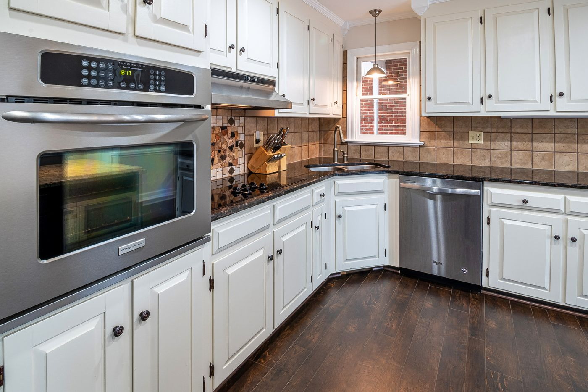

CRC Cabinet has been building custom cabinets for Bryan homes for over 37 years — joinery and finish work made to be lived with for decades, not replaced in a few.
Generic examples of what a custom cabinet shop typically offers — confirm your exact project by phone.
Full kitchens designed and built around your layout and storage needs.
Confirm by phoneVanities built to fit odd spaces standard sizes don't.
Confirm by phoneBookcases, entertainment centers and closet systems, built in place.
Confirm by phoneNew doors and faces on existing boxes, for a lower-cost refresh.
Confirm by phoneReplacement doors and drawer fronts matched to existing cabinetry.
Confirm by phoneWalk through layout and material options before anything is built.
Confirm by phone
Since 1988, CRC Cabinet has built custom cabinetry for Bryan homes with the kind of joinery and finish work meant to still be standing decades later — not disposable, replaceable boxes.
Custom cabinetry for kitchens, baths and built-ins since 1988. Call ahead to schedule a design consultation.